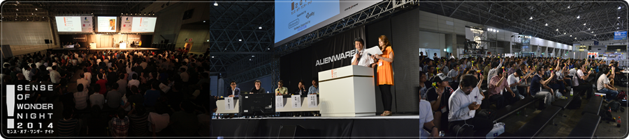

BUSINESS DAY：September 18 (Thu) - September 19 (Fri) PUBLIC DAY：September 20 (Sat) - September 21 (Sun)
TOP To Exhibit Sense of Wonder Night

What's New
What is "SENSE OF WONDER NIGHT"?

"SENSE OF WONDER NIGHT (SOWN) 2014" throws spotlights on game developers to draw wellspring of ideas which may stir the static concept of the game. In other words, SOWN 2014 will find out the game ideas causing "SENSE OF WONDER". "SENSE OF WONDER NIGHT (SOWN) 2014" would provide a presentation opportunity for game developers with unique ideas at TOKYO GAME SHOW 2014. Total of 9 presenters have been selected out of 125 applications at the last year’s event. Approximately 300 people have attended SOWN 2013, where the venue was packed with excitement and international atmosphere. SOWN 2014 commemorates the seventh anniversaries with internationally increasing entries.
Objectives of "SENSE OF WONDER NIGHT"
- To introduce games with a game design and ideas that are experimental and creative, and that cannot be called conventional or traditional
- To raise awareness of the great value of "sense of wonder" in games, which may transform the common sense of game, and lead to invigorate the game industry
- To offer people creating experimental games opportunities for the future product release
- To create new domains in the game industry
We have begun inviting entries to SOWN 2013.
Why don't you show your idea to the Tokyo Game Show audiences who come from everywhere in the world?
And we would like you to be inspired by other presenters and audiences and find new experience and network at SOWN 2014.
Acknowledgement
The "SENSE OF WONDER NIGHT" event has received a lot of inspiration from the "Experimental Gameplay Workshop" that was started at the Game Developers Conference in 2001.
We would like to express our thanks to the many people who helped to make these workshops a success and to all our friends.